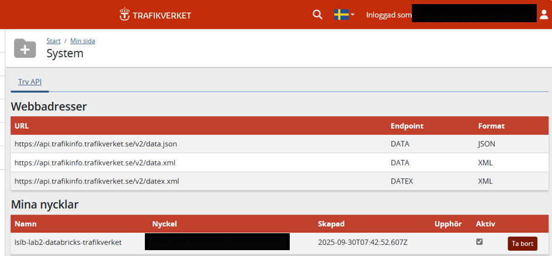
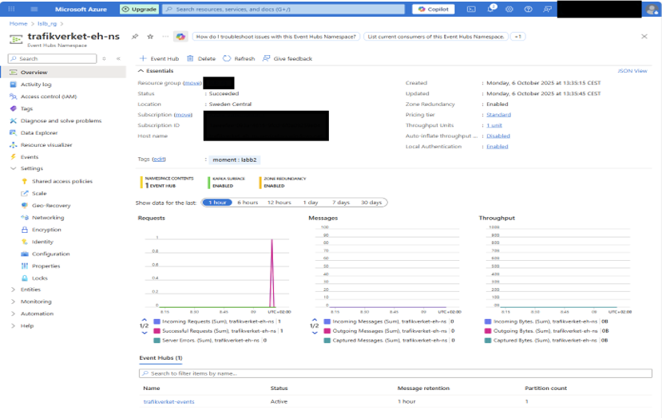
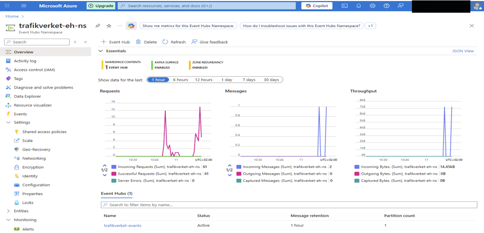

Architecture
Real-time ingestion of live train events — platform changes and announcements from Sweden's transport authority — through four Azure services.
What it looks like

Data source — Trafikverket's open API delivering TrainStationMessage events as JSON.

Event Hub — the trafikverket-events hub, Kafka surface enabled, Sweden Central.

Live traffic — incoming messages and bytes showing real data flowing through.

Streaming consumer — PySpark spark.readStream with encrypted connection, consumer group and live JSON arriving.
Streaming decisions
- Consumer groups — a dedicated group (
'ny1') so the lab consumer reads independently - Starting position —
@latest: only new events, no replay of history failOnDataLoss: false— lab-friendly: keep streaming even if data expires out of retention- SQL landing-zone schema — what to flatten from nested JSON vs. keep raw is a real modeling choice
Lessons learned
Streaming is different: consumer groups, starting positions and data-loss behavior are decisions you have to make explicitly — there's no "just read the file" fallback. Debugging across four Azure services taught me more than any single-service tutorial: when data doesn't land, the fault can sit anywhere in the chain.